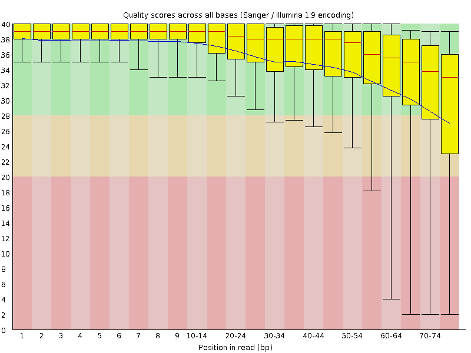
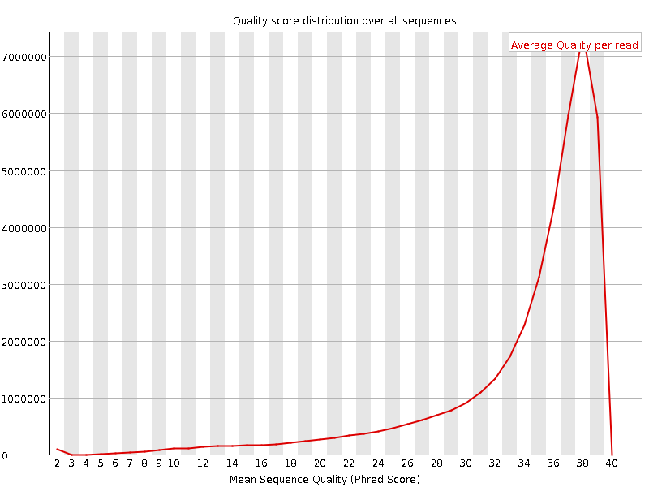
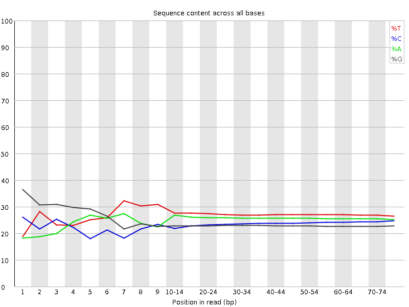
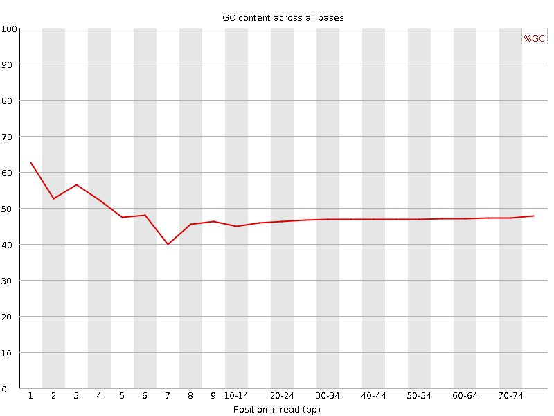
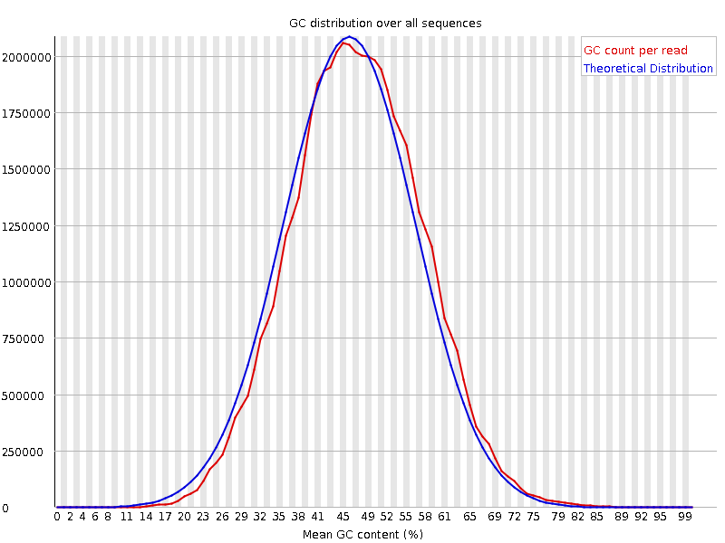
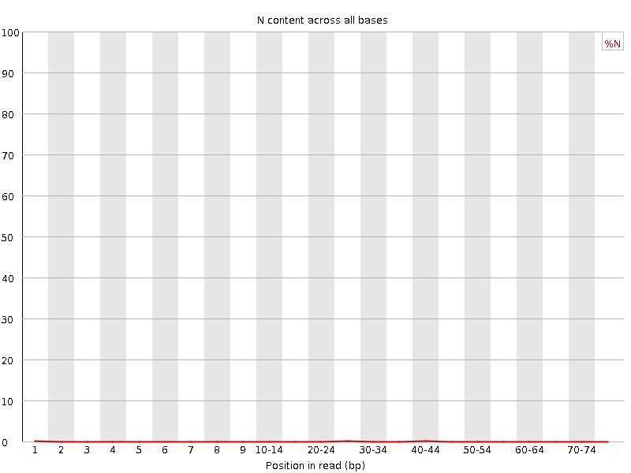
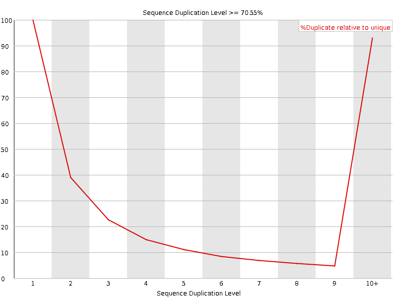
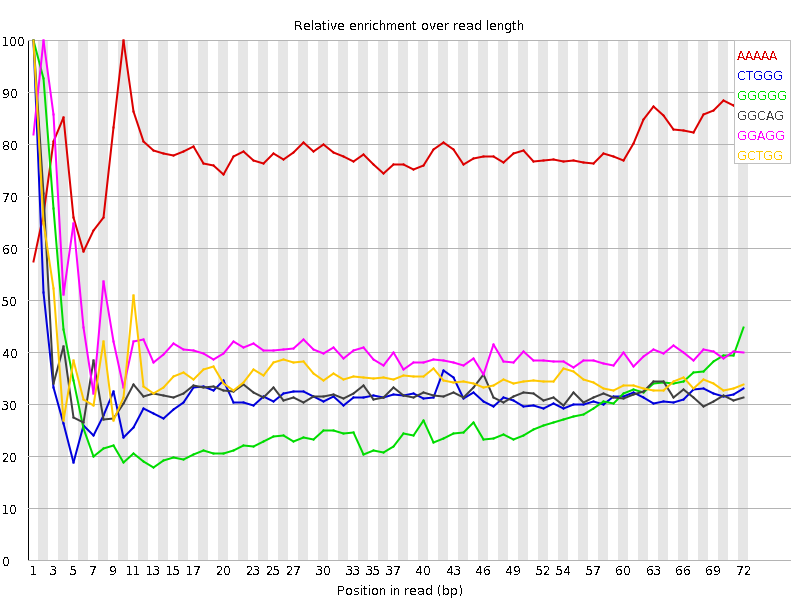

![[OK]](Icons/tick.png) Basic Statistics
Basic Statistics
| Measure | Value |
|---|---|
| Filename | SRR307933_1.fastq |
| File type | Conventional base calls |
| Encoding | Sanger / Illumina 1.9 |
| Total Sequences | 41141780 |
| Filtered Sequences | 0 |
| Sequence length | 76 |
| %GC | 47 |
Per base sequence quality

Per sequence quality scores

![[WARN]](Icons/warning.png) Per base sequence content
Per base sequence content

![[FAIL]](Icons/error.png) Per base GC content
Per base GC content

Per sequence GC content

Per base N content

Sequence Length Distribution

Sequence Duplication Levels

Overrepresented sequences
No overrepresented sequences
Kmer Content

| Sequence | Count | Obs/Exp Overall | Obs/Exp Max | Max Obs/Exp Position |
|---|---|---|---|---|
| AAAAA | 10314160 | 3.161645 | 4.033576 | 10 |
| CTGGG | 5755900 | 2.3092542 | 7.226339 | 1 |
| GGGGG | 4955710 | 2.2929096 | 7.9484944 | 1 |
| GGCAG | 5329885 | 2.2667294 | 6.768312 | 1 |
| GGAGG | 5318725 | 2.266357 | 5.3597383 | 2 |
| GCTGG | 5492765 | 2.203685 | 6.047255 | 1 |
| TGGGG | 4797835 | 1.9286023 | 5.73912 | 2 |
| GGGCA | 4450830 | 1.8928789 | 5.521655 | 1 |
| GGGAG | 4393395 | 1.8720652 | 6.248411 | 1 |
| GGGGA | 4167745 | 1.7759136 | 7.76082 | 1 |
| GGGGC | 3755715 | 1.7343423 | 5.292976 | 2 |
| GGGAA | 4192715 | 1.6453401 | 5.1596026 | 1 |
| GGGTG | 3852480 | 1.5485947 | 5.0341916 | 2 |
| GTGGG | 3711495 | 1.4919225 | 7.2611947 | 1 |
| GGGGT | 3698185 | 1.4865723 | 6.297947 | 1 |
| TGTGT | 4313805 | 1.308852 | 6.6271825 | 2 |
| GTGTG | 3736270 | 1.3048241 | 8.0105505 | 1 |
| CGGGG | 2414500 | 1.114986 | 7.879843 | 1 |
| TACAA | 3438745 | 1.0776491 | 6.208864 | 6 |
| GTACA | 2759325 | 0.9389461 | 6.7125163 | 5 |
| TGTAC | 2605080 | 0.8362488 | 6.222262 | 4 |
| GTGTA | 2391830 | 0.7692785 | 6.4742804 | 3 |